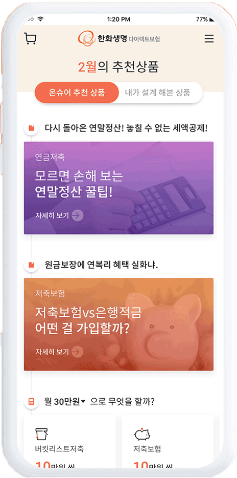
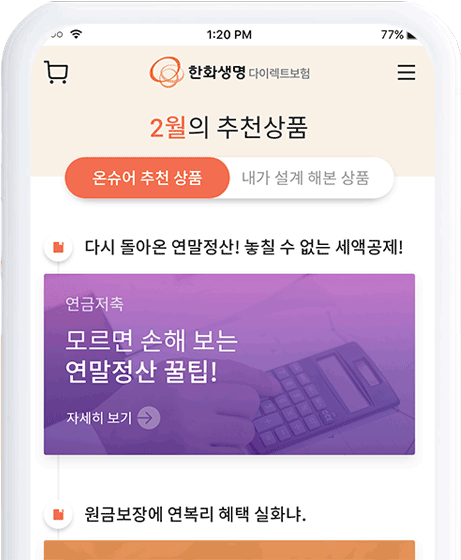

온슈어 모바일웹
UI/UX 혁신을 통한 채널 활성화 강화

-
01The operating room of today
The main idea behind this product was to simply make the lives of surgeons, who work extremely hard, a little easier. With Nodus Medical, doctors' day-to-day responibilities becomes less stressful, which allows for offering even better care to patients.
-
02Color SchemeColors are picked carefully to match flat asthetic of the App Design.
Primary Color
#f37321Secondary Color
#232325Additional Color
#D1D1D1
NEW
EXPERIENCE

TURNING
한화생명은 온슈어 홈페이지 런칭 이후 서비스의 안정화 기간에 접어들면서 고객의 이탈 방지와 가입전환률을 개선할 새로운 방안들에 대한 고민이 필요한 시점이었습니다.
보험시장은 빅데이터를 활용한 사용자 분석을 통해 고객 맞춤형 서비스를 제공하기 시작했으며 이를 통한 경쟁이 심화되고 있어 차별적인 서비스 대응이 필요한 시점이었습니다.POINT
고객의 확장
실적의 증대